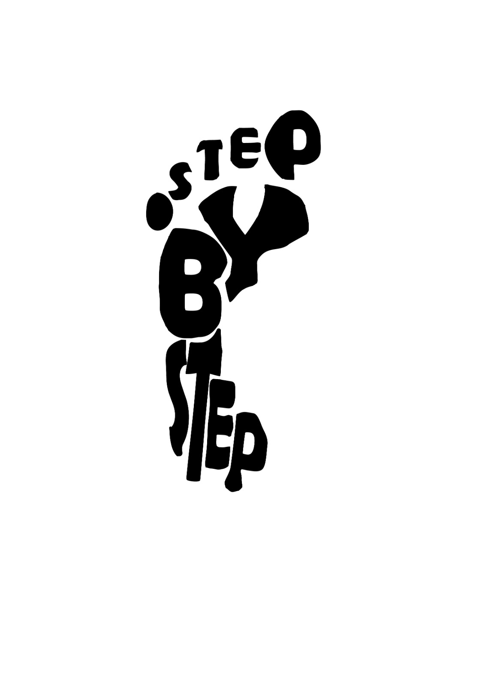

<!-- Kristina Kragovic 2021/0270 -->
{% extends 'admin_base.html' %}
{% block title %} Uredi Trenera {% endblock %}
{% block content %}

    <div class="container">
        <div class="logodiv"></div>
        <h3>Uređivanje trenera</h3>
        <form id="loginForm" onsubmit="selectTrener(event)" method="POST">
        {% csrf_token %}
            <hr>
            {% for trener in treneri %}
                <div class="opcija">
                    <label for="{{ trener.idkor }}">{{ trener.mejl }}</label>
                    <input type="radio" name="trener" id="{{ trener.idkor }}" value="{{ trener.idkor }}">
                </div>
            {% endfor %}
            <hr>
            <input type="submit" value="Izaberi">
        </form>
    </div>

    <div>
        <a class="btn"  href="{% url 'logout' %}">LOG OUT</a>
    </div>

{% endblock %}
{% block extra_scripts %}
    <script>
        function selectTrener(event) {
            event.preventDefault(); // Sprečava podrazumevano slanje forme

            // Dohvati sve input elemente
            const inputs = document.getElementsByTagName('input');
            let selectedTrener = null;

            // Prođi kroz sve input elemente i nađi označeni radio dugme
            for (let i = 0; i < inputs.length; i++) {
                if (inputs[i].type === 'radio' && inputs[i].checked) {
                    selectedTrener = inputs[i];
                    break;
                }
            }

            if (selectedTrener) {
                const trenerId = selectedTrener.value;
                console.log('Selected trener ID:', trenerId);
                if (!trenerId) {
                    alert("ID trenera nije postavljen.");
                    return;
                }
                document.getElementById('loginForm').action = `/urediOdgovarajucegTrenera/${trenerId}`;
                document.getElementById('loginForm').submit();
            } else {
                alert("Molimo odaberite trenera.");
            }
        }

     function toggleDropdown(dropdownId) {
            var dropdowns = document.querySelectorAll('.dropdown');
            dropdowns.forEach(function(dropdown) {
                if (dropdown.id !== dropdownId) {
                    dropdown.style.display = "none";
                }
            });
            var dropdown = document.getElementById(dropdownId);
            if (dropdown.style.display === "none" || dropdown.style.display === "") {
                dropdown.style.display = "block";
            } else {
                dropdown.style.display = "none";
            }
        }
    </script>
{% endblock %}
